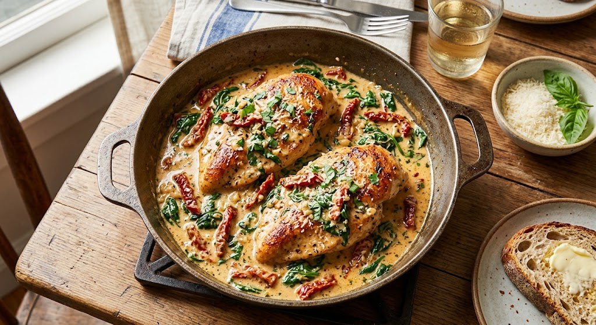

Home
Creamy Garlic Parmesan Tuscan Chicken

Description
A restaurant-quality dinner made in just 30 minutes. Juicy, pan-seared chicken breasts are simmered in a velvety
garlic and Parmesan cream sauce infused with sun-dried tomatoes and fresh spinach. Perfect for a cozy weeknight meal
served over pasta or with crusty bread.
Ingredients
- 2 large chicken breasts, halved horizontally into thin cutlets
- 1 tbsp olive oil
- 2 tbsp unsalted butter
- 4 cloves garlic, minced
- 1 cup heavy cream
- 1/2 cup chicken broth
- 1/2 cup grated Parmesan cheese
- 1/2 cup sun-dried tomatoes, drained and chopped
- 2 cups fresh baby spinach
- Salt and black pepper to taste
- 1/2 tsp dried oregano
Instructions
- Season the chicken breasts on both sides with salt, pepper, and dried oregano.
- Heat olive oil and 1 tablespoon of butter in a large skillet over medium-high heat.
- Sear the chicken for 4–5 minutes per side until golden brown and cooked through (internal temperature reaches 165°F / 74°C). Remove chicken and set aside on a plate.
- In the same skillet, melt the remaining tablespoon of butter over medium heat. Add minced garlic and sauté for 1 minute until fragrant.
- Pour in the chicken broth and heavy cream, bringing the mixture to a gentle simmer.
- Stir in the Parmesan cheese until melted and smooth, then add the sun-dried tomatoes and baby spinach. Cook for 2 minutes until the spinach wilts.
- Return the chicken to the skillet, spooning the sauce over the top, and simmer for another 2 minutes before serving hot.